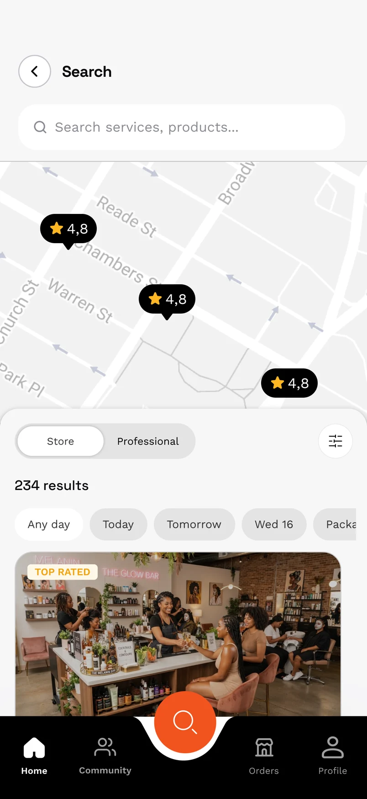
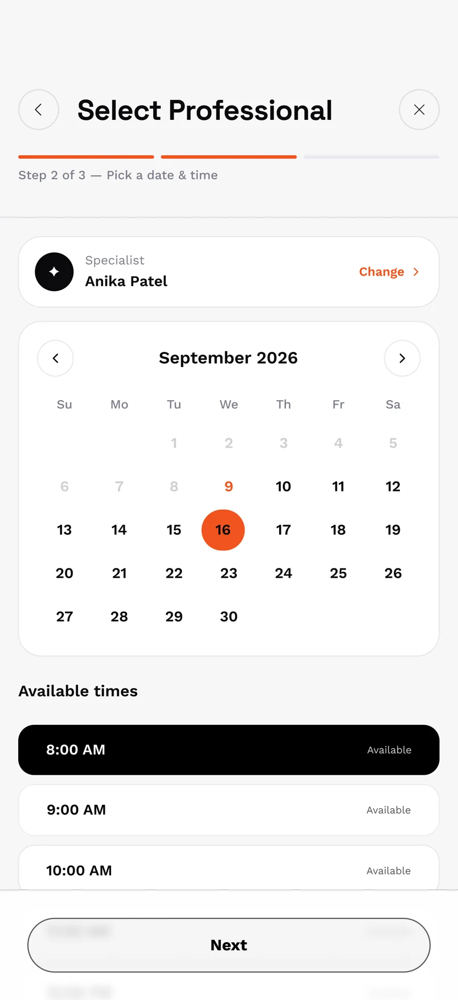
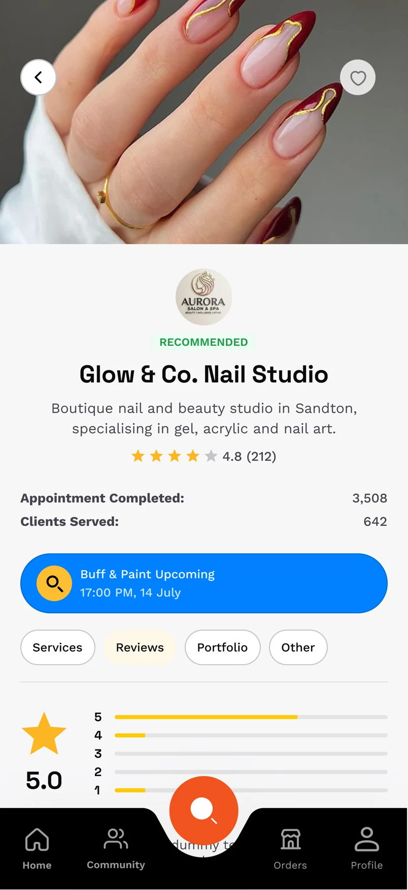

MEET YOUR LOCAL BUSINESSESSmall businesses.
Small businesses.
Big discoveries.
Explore approved businesses, from resident-owned services to nearby favourites. See what they offer and ask a question before you book.
YOUR NEIGHBOURHOOD. REIMAGINED.
The local marketplace and community app for where you live. Discover approved businesses, book services and connect with neighbours.
For residents and local businesses. Register for launch updates by email.


GOOD THINGS, CLOSER TO HOME.
From a beauty appointment to a personal training session, discover services that fit your day and businesses that serve your community.
01 / MEET YOUR EVERYDAY APP
Find a business, explore its services and prices, ask a question and make a booking. SaintMarket brings the next step into the same app.
From a fresh set of nails to your next fitness session, find approved businesses nearby. Browse services and prices, explore profiles and choose what fits your day.

A preview of the SaintMarket app. Screens show product designs; listings and availability may differ at launch.
MORE FROM THE PLACE YOU CALL HOME
Where your estate enables facility bookings, check availability and request a braai area, shared office or another participating space through SaintMarket.
Your estate sets the rules. Available facilities, booking conditions and approval requirements depend on your estate.
Access stays in the right hands. Your estate manages resident and business participation. An app account does not automatically grant physical entry.
BUILT FOR YOUR BUSINESS, TOO
Run a business in or around a residential estate? Introduce your services to nearby residents and bring enquiries, bookings and customer activity together.
Register business interestGive residents a clear view of your business, services, prices and opening hours.
Answer questions and help customers choose the right service before they book.
Manage availability, appointment details and booking payments in one place.
Resident-owned and nearby businesses can express interest. Every business needs approval before joining an estate’s marketplace.
JOIN THE SAINTMARKET LAUNCH LIST
A few details now. A clearer path to joining your community.
A FEW THINGS TO KNOW
A closer look at how SaintMarket fits into your neighbourhood.
You’ll see a confirmation that you’re on the launch list. We’ll email you relevant launch updates and explain how to join when access is available for your community. No further action is needed now.
Residents of participating estates and approved businesses serving those communities. Your estate and account type determine the access you receive. Registering interest is the first step, not immediate account activation.
Yes. Nearby businesses can express interest alongside resident-owned businesses. Each business must be approved before it can access the estate’s marketplace, and continued participation depends on meeting its standards.
No. This form records your interest. Applicable fees, payment arrangements and participation terms will be shared for agreement before business activation.
The business named on the listing provides the service. SaintMarket helps you discover, enquire, book and keep the details together. Check the service description, price and cancellation terms before confirming.
Start with the business for questions about its service or an appointment. App problems go to SaintMarket support. Unresolved or serious concerns can be escalated to SaintMarket and the estate’s designated team.
Where your estate enables it, you can request participating facilities through the app. Your estate decides which spaces are available and sets their booking and approval rules.
YOUR COMMUNITY. YOUR MARKETPLACE.